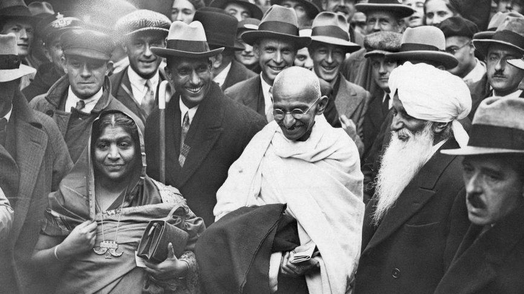

Gandhi walks with Sarojini Naidu from the station at Boulogne to the quay on September 12, 1931 where he embarked on the channel steamer for Folkestone (Kent, Southeast London). (Photo by George Rinhart/Corbis via Getty Images)
Timeline Of Mahatma Gandhi(Bapu) Life
- 1869 : Mohandas Karamchand Gandhi was born on 2 October 1869 into a Gujarati Hindu Modh Baniya family in Porbandar.
- 1883 : In May 1883, the 13-year-old Mohandas was married to 14-year-old Kasturbai Makhanji Kapadia (her first name was usually shortened to "Kasturba", and affectionately to "Ba") in an arranged marriage, according to the custom of the region at that time.
- 1885 : In late 1885, Gandhi's father Karamchand died.Gandhi, then 16 years old, and his wife of age 17 had their first baby, who survived only a few days. The two deaths anguished Gandhi.The Gandhi couple had four more children, all sons: Harilal, born in 1888; Manilal, born in 1892; Ramdas, born in 1897; and Devdas, born in 1900.
- 1887 : n November 1887, the 18-year-old Gandhi graduated from high school in Ahmedabad.
- 1888 : On 10 August 1888, Gandhi aged 18, left Porbandar for Mumbai, to go to London for Law Studies.
- 1891 : Gandhi, at age 22, was called to the bar in June 1891 and then left London for India, where he learned that his mother had died while he was in London and that his family had kept the news from him.
- 1893 : In 1893, a Muslim merchant in Kathiawar named Dada Abdullah contacted Gandhi. He owned a large successful shipping business in South Africa. His distant cousin in Johannesburg needed a lawyer.They offered a total salary of £105 plus travel expenses. He accepted it, for at least one-year commitment in the Colony of Natal, South Africa, also a part of the British Empire.
- 1893 : In April 1893, Gandhi aged 23, set sail for South Africa to be the lawyer for Abdullah's cousin.He spent 21 years in South Africa, where he developed his political views, ethics and politics.
- 1893 : Gandhi ji thrown off a train at Pietermaritzburg after refusing to leave the first-class.He sat in the train station, shivering all night and pondering if he should return to India or protest for his rights.He chose to protest and was allowed to board the train the next day.
- 1895 : Gandhi, at age 24, prepared a legal brief for the Natal Assembly in 1895, seeking voting rights for Indians.
- 1900 : During the Boer War, Gandhi volunteered in 1900 to form a group of stretcher-bearers as the Natal Indian Ambulance Corps. According to Arthur Herman, Gandhi wanted to disprove the imperial British stereotype that Hindus were not fit for "manly" activities involving danger and exertion, unlike the Muslim "martial races".
- 1906 : Gandhi adopted his still evolving methodology of Satyagraha, or nonviolent protest, for the first time
- 1906 : In 1906, when the British declared war against the Zulu Kingdom in Natal, Gandhi at age 36, sympathised with the Zulus, and encouraged the Indian volunteers to help as an ambulance unit.
- 1909 : With his book Hind Swaraj (1909) Gandhi, aged 40, declared that British rule was established in India with the co-operation of Indians and had survived only because of this co-operation. If Indians refused to co-operate, British rule would collapse and swaraj would come.
- 1910 : In 1910, Gandhi established, with the help of his friend Hermann Kallenbach, an idealistic community they named 'Tolstoy Farm' near Johannesburg. There he nurtured his policy of peaceful resistance.
- 1914 : . The honorific Mahātmā was applied to him first in 1914 in South Africa is now used worldwide.
- 1915 : At the request of Gopal Krishna Gokhale, conveyed to him by C. F. Andrews, Gandhi returned to India in 1915. He brought an international reputation as a leading Indian nationalist, theorist and community organiser.Gandhi joined the Indian National Congress and was introduced to Indian issues, politics and the Indian people primarily by Gokhale.
- 1915 : After his return to India in 1915, he set about organising peasants, farmers, and urban labourers to protest against excessive land-tax and discrimination.
- 1917 : Gandhi's first major achievement came in 1917 with the Champaran agitation in Bihar. The Champaran agitation pitted the local peasantry against their largely British landlords who were backed by the local administration.
- 1918 : In April 1918, during the latter part of World War I, the Viceroy invited Gandhi to a War Conference in Delhi.Gandhi agreed to actively recruit Indians for the war effort.
- 1918 : In 1918, Kheda was hit by floods and famine and the peasantry was demanding relief from taxes. Gandhi moved his headquarters to Nadiad,[92] organising scores of supporters and fresh volunteers from the region, the most notable being Vallabhbhai Patel.
- 1919 : In 1919 after the World War I was over, Gandhi (aged 49) sought political co-operation from Muslims in his fight against British imperialism by supporting the Ottoman Empire that had been defeated in the World War.
- 1919 : In February 1919, Gandhi cautioned the Viceroy of India with a cable communication that if the British were to pass the Rowlatt Act, he will appeal Indians to start civil disobedience
- 1919 : In March 1919, British law officers opened fire on an assembly of unarmed people, peacefully gathered, participating in satyagraha in Delhi
- 1919 : . On 6 April 1919, a Hindu festival day, he asked a crowd to remember not to injure or kill British people, but express their frustration with peace, to boycott British goods and burn any British clothing they own. He emphasised the use of non-violence to the British and towards each other, even if the other side uses violence.On 9 April, Gandhi was arrested.
- 1919 : On 13 April 1919, people including women with children gathered in an Amritsar park, and a British officer named Reginald Dyer surrounded them and ordered his troops to fire on them. The resulting Jallianwala Bagh massacre (or Amritsar massacre) of hundreds of Sikh and Hindu civilians enraged the subcontinent, but was cheered by some Britons and parts of the British media as an appropriate response.
- 1920 : Gandhi took leadership of the Congress in 1920 and began escalating demands until on 26 January 1930 the Indian National Congress declared the independence of India.
- 1921 : Gandhi was the leader of the Indian National Congress.He reorganised the Congress. With Congress now behind him, and Muslim support triggered by his backing the Khilafat movement to restore the Caliph in Turkey, Gandhi had the political support and the attention of the British Raj.
- 1921 : Assuming leadership of the Indian National Congress in 1921, Gandhi led nationwide campaigns for various social causes and for achieving Swaraj or self-rule.
- 1922 : Gandhi was arrested on 10 March 1922, tried for sedition, and sentenced to six years' imprisonment. He began his sentence on 18 March 1922. With Gandhi isolated in prison, the Indian National Congress split into two factions, one led by Chitta Ranjan Das and Motilal Nehru favouring party participation in the legislatures, and the other led by Chakravarti Rajagopalachari and Sardar Vallabhbhai Patel, opposing this move.
- 1924 : The political base behind Gandhi had broken into factions. Gandhi was released in February 1924 for an appendicitis operation, having served only two years.
- 1929 : On 31 December 1929, the flag of India was unfurled in Lahore. Gandhi led Congress celebrated 26 January 1930 as India's Independence Day in Lahore. This day was commemorated by almost every other Indian organisation.
- 1930 : Gandhi led Indians in challenging the British-imposed salt tax with the 400 km (250 mi) Dandi Salt March in 1930.
- 1930 : . Gandhi then launched a new Satyagraha against the tax on salt in March 1930.This was highlighted by the famous Salt March to Dandi from 12 March to 6 April, where, together with 78 volunteers, he marched 388 kilometres (241 mi) from Ahmedabad to Dandi, Gujarat to make salt himself, with the declared intention of breaking the salt laws. Thousands of Indians joined him on this march to the sea. The march took 25 days to cover 240 miles with Gandhi speaking to often huge crowds along the way.
- 1934 : Gandhi resigned from Congress party membership. He did not disagree with the party's position but felt that if he resigned, his popularity with Indians would cease to stifle the party's membership, which actually varied, including communists, socialists, trade unionists, students, religious conservatives.
- 1936 : Gandhi returned to active politics again in 1936, with the Nehru presidency and the Lucknow session of the Congress. Although Gandhi wanted a total focus on the task of winning independence and not speculation about India's future, he did not restrain the Congress from adopting socialism as its goal.
- 1942 : After dandi March,Gandhi ji calling for the British to Quit India in 1942.
- 1942 : At the time of World War 2 , Gandhi intensified his demand for independence, calling for the British to Quit India in a 1942 speech in Mumbai.
- 1942 : Gandhi now nearing age 73, urged his people to completely stop co-operating with the imperial government. In this effort, he urged that they neither kill nor injure British people, but be willing to suffer and die if violence is initiated by the British officials.
- 1944 : Gandhi's arrest lasted two years, as he was held in the Aga Khan Palace in Pune. During this period, his long time secretary Mahadev Desai died of a heart attack, his wife Kasturba died after 18 months' imprisonment on 22 February 1944; and Gandhi suffered a severe malaria attack.
- 1944 : Gandhi opposed partition of the Indian subcontinent along religious lines.The Indian National Congress and Gandhi called for the British to Quit India. However, the Muslim League demanded "Divide and Quit India".
- 1947 : The Muslim League did co-operate with Britain and moved, against Gandhi's strong opposition, to demands for a totally separate Muslim state of Pakistan. In August 1947 the British partitioned the land with India and Pakistan each achieving independence on terms that Gandhi disapproved.
- 1947 : The partition was controversial and violently disputed. More than half a million were killed in religious riots as 10 million to 12 million non-Muslims (Hindus, Sikhs mostly) migrated from Pakistan into India, and Muslims migrated from India into Pakistan, across the newly created borders of India, West Pakistan and East Pakistan.
- 1947 : Gandhi spent the day of independence not celebrating the end of the British rule but appealing for peace among his countrymen by fasting and spinning in Calcutta on 15 August 1947. The partition had gripped the Indian subcontinent with religious violence and the streets were filled with corpses.
- 1948 : At 5:17 pm on 30 January 1948, Gandhi was with his grandnieces in the garden of the former Birla House (now Gandhi Smriti), on his way to address a prayer meeting, when Nathuram Godse fired three bullets from a Beretta M1934 9mm Corto pistol into his chest at point-blank range. According to some accounts, Gandhi died instantly.In other accounts, such as one prepared by an eyewitness journalist, Gandhi was carried into the Birla House, into a bedroom. There he died about 30 minutes later as one of Gandhi's family members read verses from Hindu scriptures.
- 1949 : Gandhi's assassin Godse made no attempt to escape They were tried in court at Delhi's Red Fort. At his trial, Godse did not deny the charges nor express any remorse. He was arrested.Godse was found guilty and executed in 1949.
- 2007 : The United Nations General Assembly declared Gandhi's birthday 2 October as "The International Day of Nonviolence."First proposed by UNESCO in 1948, as the School Day of Nonviolence and Peace, 30 January is observed as the School Day of Nonviolence and Peace in schools of many countries.In countries with a Southern Hemisphere school calendar, it is observed on 30 March.
"I am mindful that I might not be standing before you today, as President of the United States, had it not been for Gandhi and the message he shared with America and the world."
— US President Barack Obama in a 2010 address to the Parliament of India
If you Like to Know more About Mahatma Gandhi,The Father of Indian Nation then you should go to Wikipedia Entry to Know More.
Created by Shaswat singh
Feel free to contact me